Hoy es un día muy, muy especial.
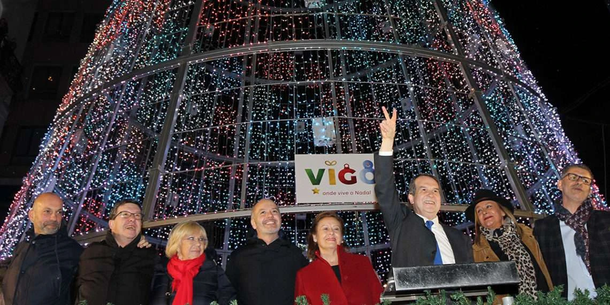
Se encienden las luces de Navidad en Vigo.
Y esta noche, media ciudad se pregunta lo mismo
¿Qué hay y dónde?
¿Está encendido ya?
¿Qué me da tiempo a ver?
Un mapa dibujado una vez.
Una imagen de 4096 × 3072 px, cortada en teselas de 512 que se cargan al hacer zoom.
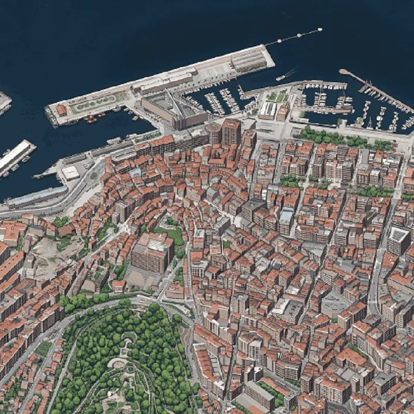
v1 · píxel por código
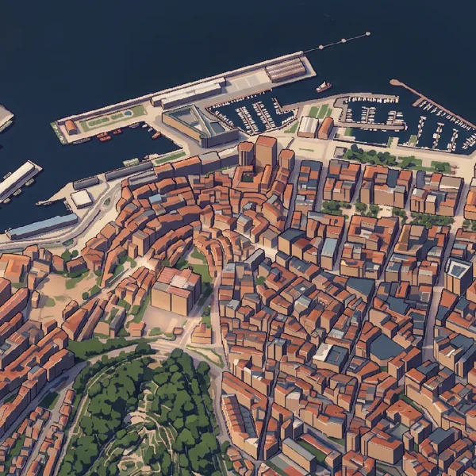
v2 · más luz
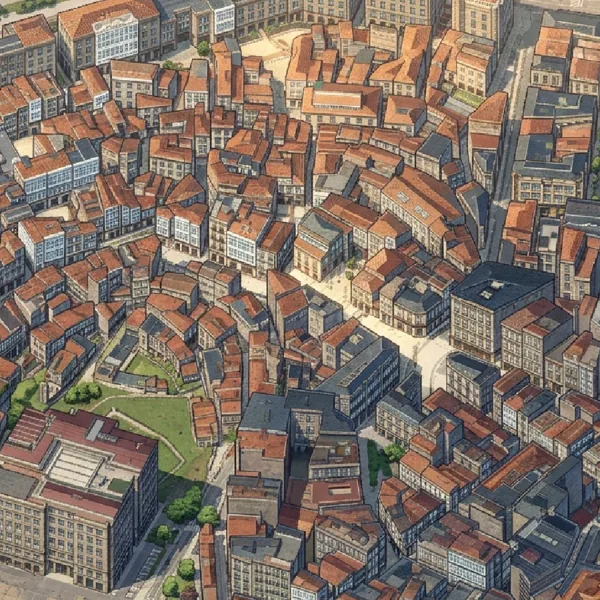
v3 · más detalle
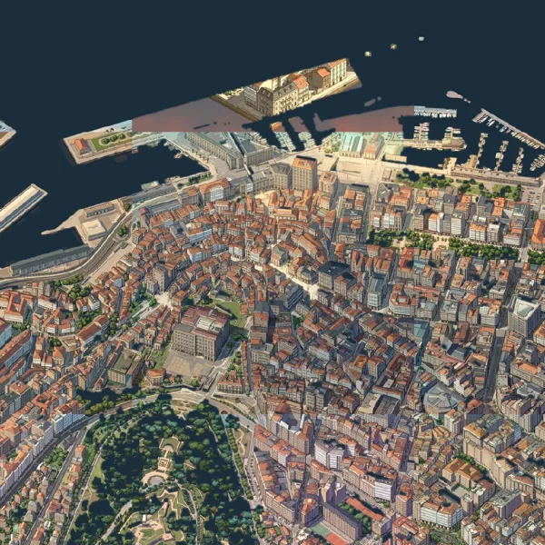
v4 · por bloques
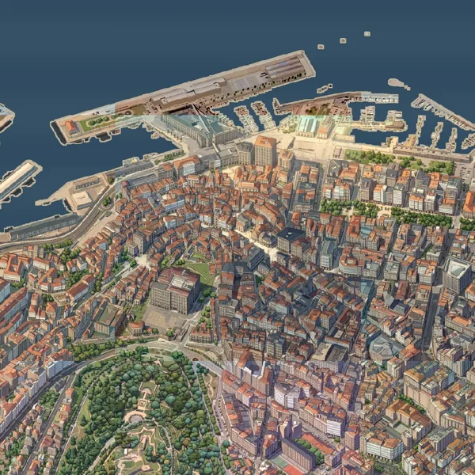
v5 · el mar
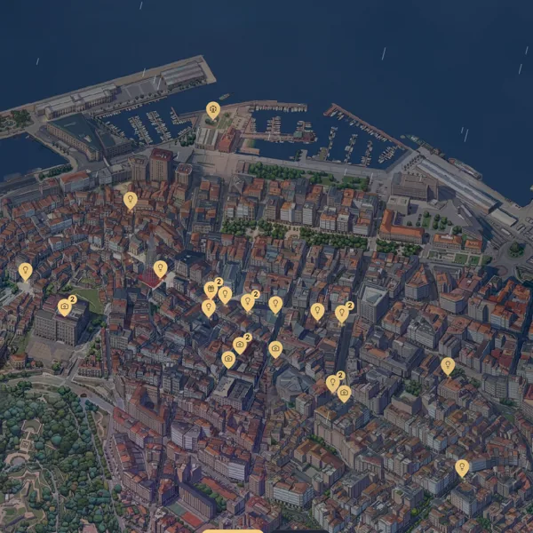
v7 · puerto y Vialia
35puntos del Concello
16de luces
12parkings en vivo
Cada punto, con su hora real.
«Abierto · Cierra 00:30»Calculado con el programa oficial 2026-27
El parking más cercanoCon sus plazas libres ahora
Los próximos busesVitrasa, según horario
¿Cuánto tiempo tienes?
De 30 a 120 minutos, ahora o a las 20:00
Lo que cabe y está abierto, por calles reales
«Empezar el paseo», parada a parada
60 min a las 20:00 → 10 cosas, 0,6 km a pie
Qué pasa hoy, hora a hora.
El encendido, la agenda del Concello y el tiempo, en una línea. Cada cosa, situada en el mapa.
Agenda de ejemplo para hoy.
Navidad hoysábado 14 nov
18:00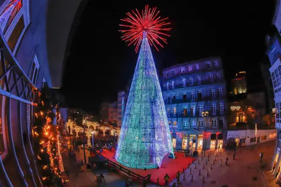
Se encienden las lucesÁrbol gigante de Nadal · Porta do Sol
Encendido
18:30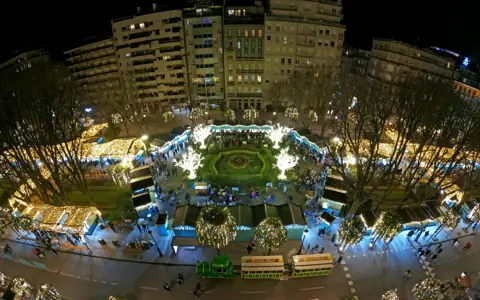
Abre el mercadoCíes Market · Plaza de Vialia
Abierto
19:00Lluvia probable, 80 %Lleva paraguas · Open-Meteo
Aviso
19:30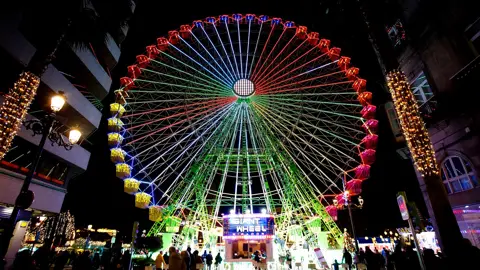
Noria GiganteVialia · abierta hasta las 00:30
Abierto
20:00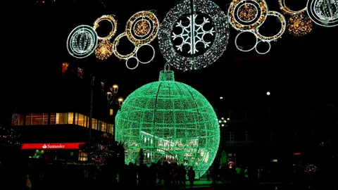
Pase musical, 10 minBola Gigante · Plaza de Urzaiz
En 1 h
21:00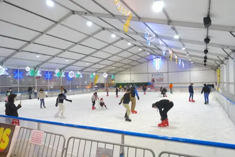
Pista de hieloAvenida de Samil
Abierto
Y para llegar, todo Vigo.
12 parkings con plazas en vivo
Paradas de Vitrasa y estaciones de Renfe
1.921 calles en la búsqueda, sin tildes y con erratas
En galego, castellano e inglés
Cómo está hecho.
Datos abiertos, un mapa pintado una vez y una web estática.
Fuentes abiertas
Concello de Vigo, IGN, OpenStreetMap, GTFS de Vitrasa y Renfe, Open-Meteo
Snapshots
Cada fuente, descargada con su fecha y normalizada a JSON
Mapa en teselas
Isométrico, dibujado una vez a partir de la ortofoto y los edificios 3D
Web estática
Móvil primero, una mano, de noche y a la intemperie
Lo que se mueve va «según horario», nunca «en directo».
TinyVigo
navihack.vercel.app
¡Feliz Navidad!
Merry Christmas!
*sí, a 14 de noviembre